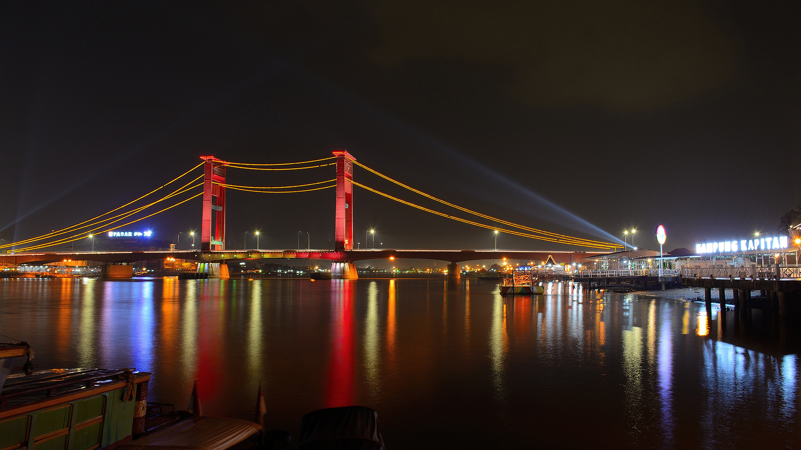
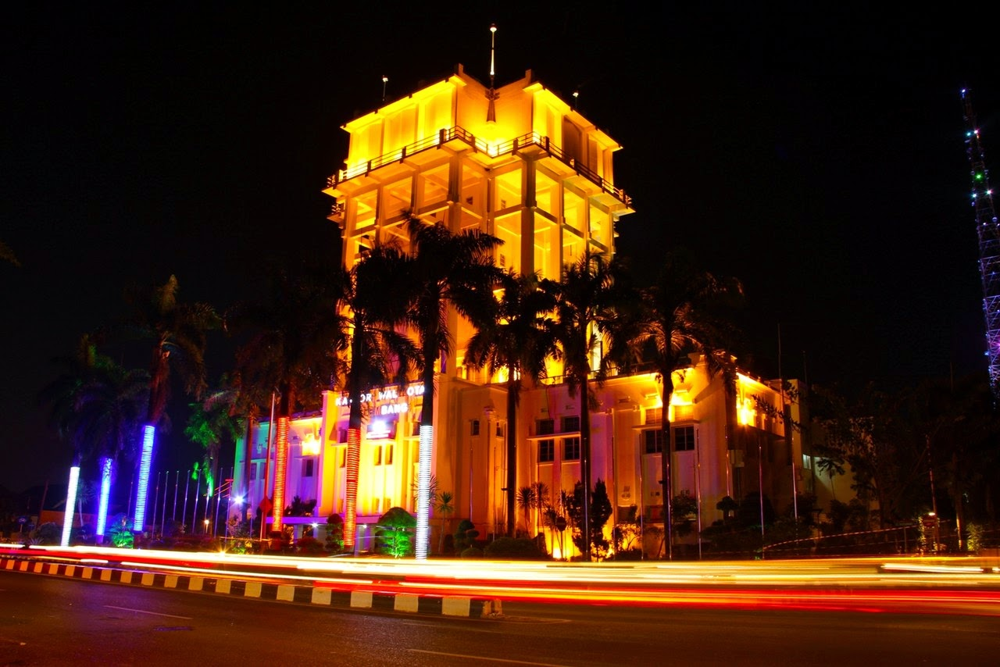
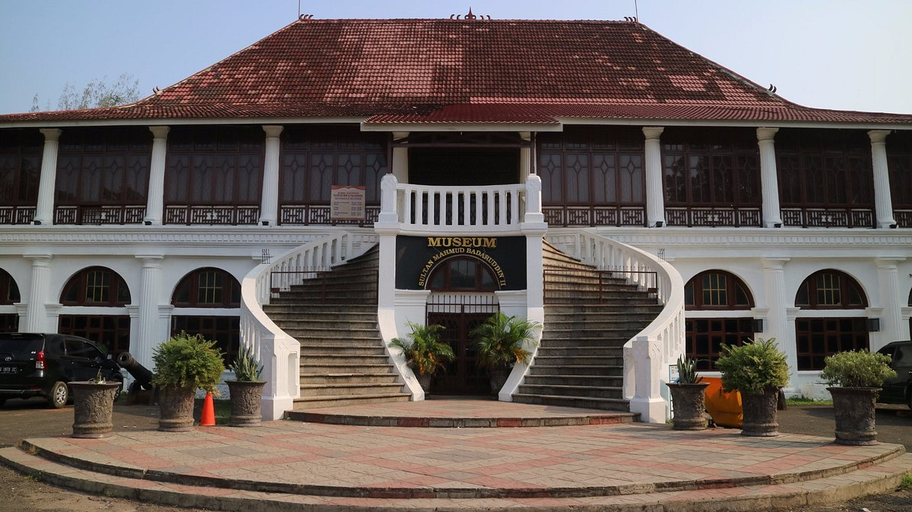
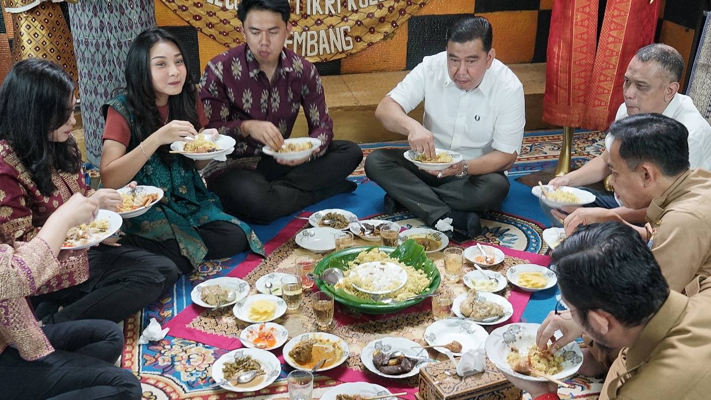

SEJARAH

Kota Palembang merupakan kota tertua di Indonesia berumur setidaknya 1337 tahun jika berdasarkan prasasti Sriwijaya yang dikenal sebagai prasasti Kedudukan Bukit. Menurut Prasasti yang berangka tahun 16 Juni 682. Pada saat itu oleh penguasa Sriwijaya didirikan Wanua di daerah yang sekarang dikenal sebagai kota Palembang. Menurut topografinya, kota ini dikelilingi oleh air, bahkan terendam oleh air. Air tersebut bersumber baik dari sungai maupun rawa, juga air hujan. Bahkan saat ini kota Palembang masih terdapat 52,24 % tanah yang yang tergenang oleh air (data Statistik 1990).
Selengkapnya
PROFIL KOTA

Kota Palembang merupakan ibukota Provinsi Sumatera Selatan. Letak Kota Palembang cukup strategis karena dilalui oleh jalan lintas Sumatera yang menghubungkan antar daerah di Pulau Sumatera. Wilayah Kota Palembang berbatasan dengan Kabupaten Banyuasin di sebelah utara, timur, dan barat serta Kabupaten Muara Enim dan Kabupaten Ogan Ilir di sebelah selatan. Kota Palembang terdiri dari 16 kecamatan. Topografi Kota Palembang merupakan tanah datar yang relatif rendah sehingga terdapat banyak rawa dan dialiri banyak sungai. Kota Palembang terbelah oleh Sungai Musi menjadi dua bagian besar yang disebut sebagai Seberang Ulu dan Seberang Ilir.
Selengkapnya
WISATA

Tidak hanya terkenal karena makanan khas daerahnya, berbagai tempat wisata di Palembang juga tak kalah menarik untuk dikunjungi.Ibu kota provinsi Sumatera Selatan ini merupakan kota dengan urutan kedua terbesar yang ada di Sumatera setelah kota Medan.Kota Palembang terkenal sebagai wisata terlaris di Pulau Sumatera. Berbagai kekayaan alam diubah menjadi kawasan wisata yang menyenangkan. Serta wisata religi dan edukasi juga disuguhkan untuk memanjakan mata.Ada deretan wisata Palembang yang sayang jika dilewatkan begitu saja. Kekayaan ragam budaya dan wisata di kota ini lah yang membuat Palembang menjadi
salah satu lokasi digelarnya Pesta Olahraga terbesar di ASIA, yaitu ASIAN GAMES 2018.
Selengkapnya
TRADISI

Sumatra Selatan atau dikenal dengan sebutan "Bumi Sriwijaya" merupakan bekas pusat pemerintahan
Kerajaan Sriwijaya. Kerajaan tersebut merupakan salah satu kerajaan terbesar yang ada di
Indonesia. Selain dikenal dengan sejarahnya yang tinggi, Sumatra Selatan juga mempunyai berbagai
budaya dan tradisi yang sangat beragam dan unik.
Selengkapnya